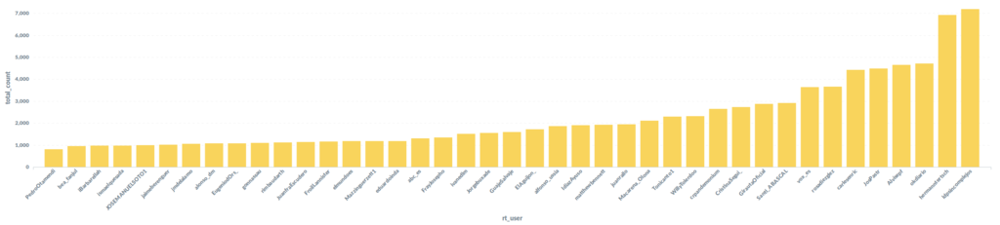
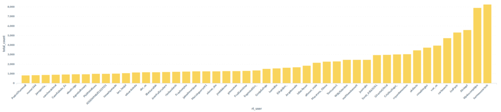
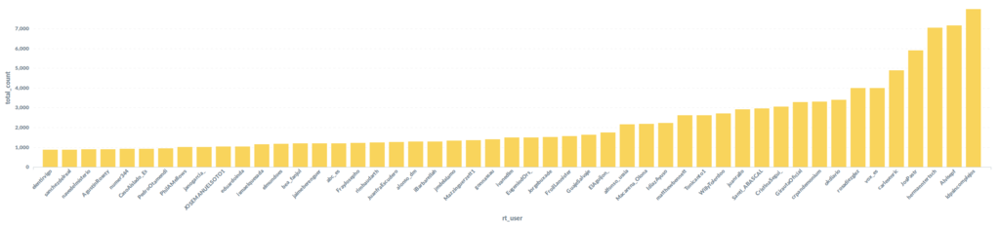
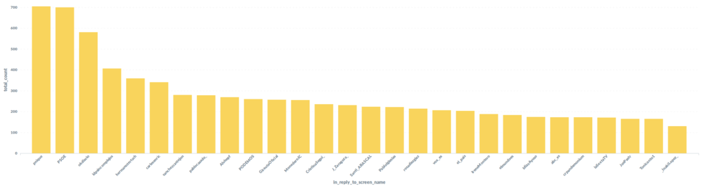
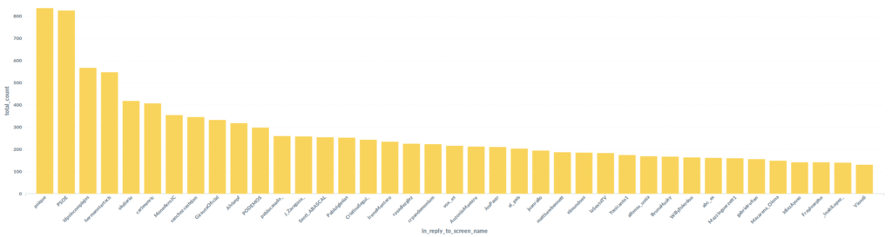
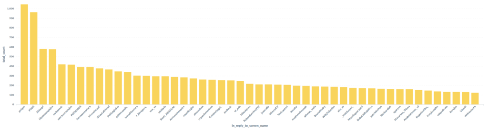
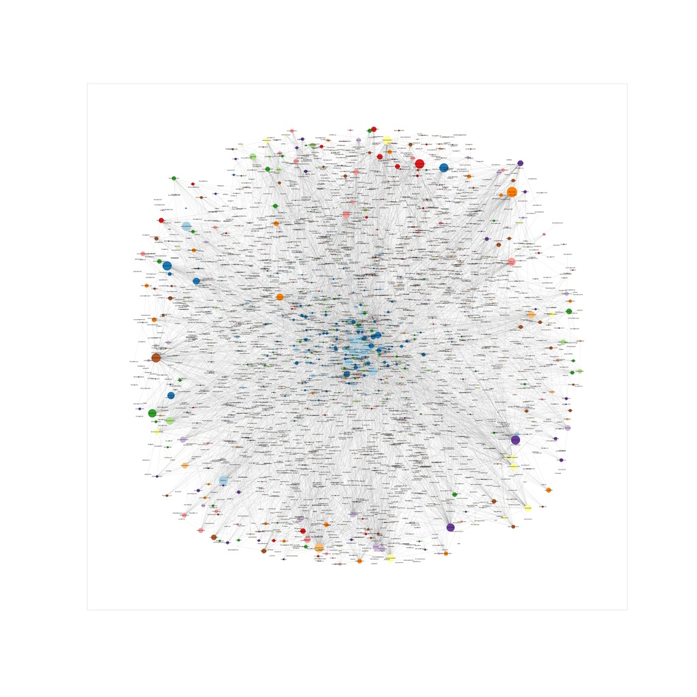
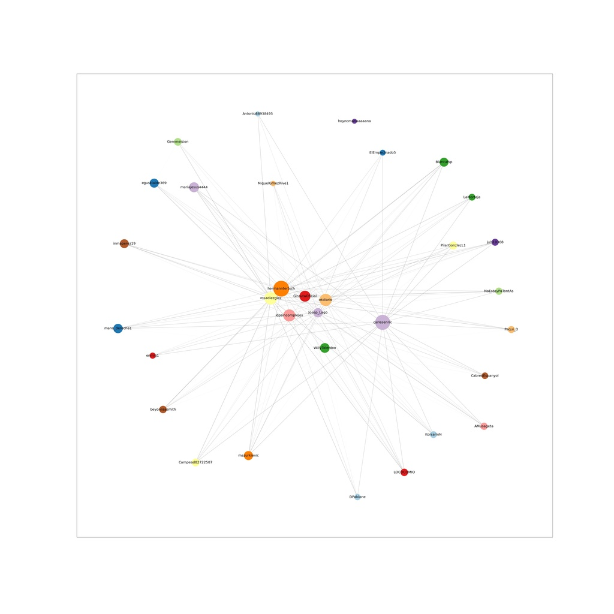
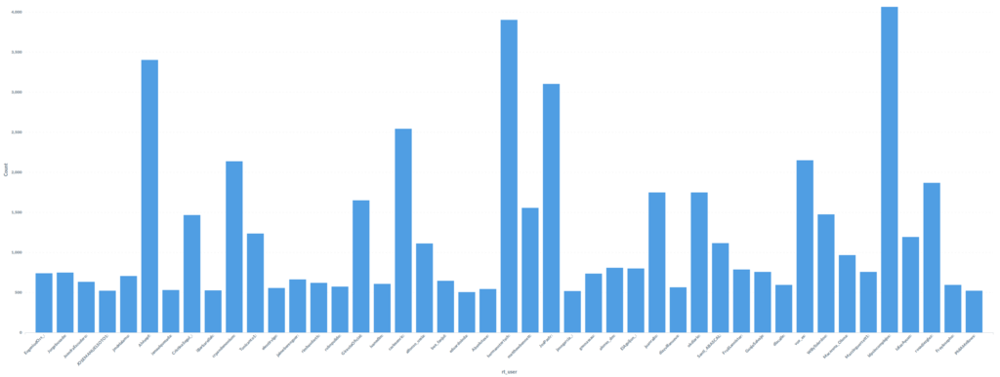

Perche' preoccuparsi per la privacy in tempo di pandemia
Come funziona una app di contact tracing?
Una app di contact tracing e' uno strumento di prevenzione che se utilizzato insieme agli altri metodi di cui disponiamo per fare fronte alla pandemia del covid, ovvero test massivo e profilassi di protezione (igiene, mascherine, distanziamento sociale), puo' aiutare a rompere la catena dei contagi.
Per quanto sappiamo fino ad ora le app europee verrano sviluppate sulle linee guida di protocolli decentralizzati, come il DP-3T.
La app funziona (anche se forse e' meglio dire funzionera') piu' o meno cosi':
Un cittadino viene diagnosticado come covid-19 positivo dal suo medico di famiglia, o dalla asl, o in ospedale.
Il personale sanitario e il cittadino configurano la positivita' sulla app che comunica questa informazione ad un server centrale. L'identita' del cittadino ne' dei suoi contatti non e' rivelata, ma solo degli identificativi anonimi.
Questi identificativi vengono inviati a tutte le app, tecnicamente si dice che vengono trasmessi in broadcast.
Le singole app faranno la verifica se sono stati in contatto con l'individuo positivo, verificando se gli identificativi che ricevono sono contenuti tra quelli delle persone con cui il cellulare e' stato in contatto.
Le funzioni fondamentali di una app di contact tracing possono essere riassunte nelle due seguenti:
Rivelare le interazioni sociali in caso di contatto con un individuo positivo
Poter calcolare un fattore di rischio per gli utenti
Le funzioni che preoccupano chi si occupa di privacy, invece sono le seguenti:
Il grafo sociale degli individui puo' essere ricompilato osservando i dati scambiati dall'applicazione
La condizione di positivita' di un individuo puo' essere rivelata.
Gli spostamenti e le coordinate geografiche degli utenti dell'applicazione possono essere calcolati o ricavati dai dati scambiati dall'applicazione.
Che rischi presuppone creare e utilizzare una app di contact tracing?
Protezione dei dati
Perche' una app di contact tracing non sia un rischio per la popolazione e' importante che vengano rispettati alcuni criteri di protezione dei dati raccolti, tra cui:
Minimizzazione dei dati
Nessuna entita' deve essere in grado di poter osservare o ricavare il grafo sociale degli utenti della app. Neanche in forma anonimizzata.
Questo aspetto e' molto importante perche' il grafo sociale di una popolazione o semplicemente di un gruppo ristretto di persone puo' rendere pubbliche informazioni altrimenti confidenziali.
Le informazioni ricevuti dagli utenti e raccolte dal sistema devono essere
solamente quelle essenziali.
Le informazioni raccolte sugli utenti che decideranno di installare la app devono essere solo quelle necessarie a ridurre il rischio di diffusione dell'empidemia.
Gli individui negativi devono essere protetti
Il sistema non puo' essere utilizzato come uno strumento di sorveglianza della popolazione. Nessuna informazione sugli utenti negativi deve essere raccolta dal sistema.
I dati devono essere distrutti
Il sistema deve essere in grado di dimenticare i dati raccolti alla fine dell'empidemia. Se non ci saranno pazienti infetti che trasmettono dati riguardo la loro positivita', e se in generale le persone smetteranno usare la applicazione, i dati dovranno essere distrutti.
Sicurezza
Perche' una app di contact tracing sia utile per il rischio epidemiologico si stima che debba essere utilizzata da circa il 50%-70% della popolazione.
Per avere un'idea di questo dato fondamentale, pensiamo che il 60% delle persone che hanno un cellulare, hanno installato whatsapp.
Inoltre una app che venga utilizzata da un numero cosi' elevato di persone, e che potenzialmente contiene dei dati sensibili e riservati sugli utenti, diventa necessariamente un target. Esiste un mercato di vulnerabilita' di sistemi informatici a cui accedono agenzie governative e non per le quali questi dati possono rappresentare un valore.
Rischi
Un avversario modifica la app per raccogliere ulteriori informazioni sugli utenti
In questo scenario un possibile avversario puo' collezionare gli identificativi anonimi generati dai cellulari con cui e' stato in contatto per identificare degli individui.
Un avversario implementa un'antenna per intercettare le connessioni bluetooth
dei cellulari in una zona circoscritta.
Questo scenario e' simile al precedente. In questo caso pero l'avversario utilizza dei sistemi per poter intercettare i segnali bluetooth dei cellulari nelle sue vicinanze e poter identificare gli utenti della app.
Un avversario riesce ad impersonificare le notifiche della app e comunicare
degli status di esposizione falsi agli utenti
Questo scenario e' simile alle campagne di fishing delle banche. Un avversario crea un messaggio simile alla notifica che invia la app e comunica ad un numero elevato di utenti di essere stati in contatto con un positivo.
L'effetto di questo attacco e' quello di generare panico o di ridurre la fiducia della popolazione nella app (discoragiandone l'utilizzo).
Perche' e' importante parlare di privacy
Identificare un individuo positivo puo' rappresentare un rischio per la sicurezza fisica di quella persona.
Alcune persone possono reaggire con aggressivita' alla notizia di essere stati in contatto con una persona infetta.
Identificare il grafo sociale di gruppi di persone e' un'informazione molto riservata che puo' essere utilizzata per vari scopi.
Immaginate che sia possibile accedere alle informazioni su come, quando e quanto spesso certi esponenti di gruppi di politici si incontrano?
Immaginate ceh sia possibile sapere che i gruppi direttivi di determinate aziende stanno avendo delle riunioni con una certa frequenza?
Inoltre e' importante sottolineare che la tecnologia non e' neutra, contiene le influenze politiche del momento in cui viene creata. Le architetture tecnologiche che definiamo in questo momento straordinario determinaranno in parte i nostri dirtitti futuri.
REFERENCES
[1] Le contact tracing app rispettano la nostra privacy? https://alexandrageese.eu/de/le-contact-tracing-app-rispettano-la-nostra-privacy/
Online disinformation campaigns. A deep dive.
A few days ago I published a little summary of online disinformation campaign for the spanish far right [1].
I tried to highlight the emerging patterns of how these amplification machines operate. Shoving retweets distribution for users rt-ing one of the top-talker accounts.
I am now going to share a larger archive of tweets. To obtain this archive I compiled all the tweets from users that have retweeted the account @ldpsincomplejos.
Here is how I obtained the tweets for the account @ldpsincomplejos was obtained:
def get_tweets_search(key, client):
tweets_endpoint = "https://api.twitter.com/1.1/search/tweets.json?q=" + key + "&count=500&include_entities=true&result_type=recent"
response, data = client.request(tweets_endpoint)
return json.loads(data)
This function will return 500 tweets, including both tweets by the account and RTs to the account. For each tweet I extracted the username and got the latest 200 tweets user timeline.
def get_timeline(username, client):
timeline_endpoint = "https://api.twitter.com/1.1/statuses/user_timeline.json?screen_name=" + username + "&include_rts=true&count=200"
response, data = client.request(timeline_endpoint)
return json.loads(data)
Now I identified a few top-talkers and computed the distribution of RTs to Accounts.
Here are some results:
Twitter distribution for users RT-ing @okdiario: who are they RTing?
 full image
{kind=link}
Twitter distribution for users RT-ing @hermanntertsch: who are they RTing?
 full image
{kind=link}
Twitter distribution for users RT-ing @alvisepf: who are they RTing?
 full image
{kind=link}
Here is the thing. If you look at the distribution of comments instead you get a different result.
Twitter distribution for users commenting-ing @okdiario: who are they commenting?
 full image
{kind=link}
Twitter distribution for users commenting-ing @hermanntertsch: who are they commenting?
 full image
{kind=link}
Twitter distribution for users commenting-ing @alvisepf: who are they commenting?
 full image
{kind=link}
This means in practice that there is a list of accounts RT-ing sources on the right and commenting on accounts from the left. The anticipation machines objective is in fact to spread division and hate.
Finally here is a visualization of the graph of accounts RTin OkDiario:
 full image
{kind=link}
If we isolate the accounts doing more than 100 RT, we find a group of approximately 20 accounts doing most of the tweets.
 full image
{kind=link}
Here is probably a team of accounts acting to promote the tweets from OkDiario and a group of other accounts.
Would you like to have access to this data?
I have a metabase instance setup on heroku.
You can have a look at the data used in this study.
If you get in touch I can give you access.
REFERENCES
[1] https://www.hiro7.eu/blog/2020-04-05-online-disinformation
Online disinformation campaigns. How do these work. What can we do.
Every social media user has possibly noticed how content is often driven by very strong emotions. Many posts range from extreme cute kittens to drama stories, but above all emotions it seems like online content is especially fueled by anger [1] [2].
This might be specifically true for political driven content [3], but how people came from coming together to comment Eurovision [4] to insult each others during political campaigns?
To understand how we got here, we cannot ignore everything that happen with facebook and Cambridge Analytica [5]. Between 2013 and 2018 the company combined aggregation of Facebook data (later proved illegal), data mining and analysis, with communication campaigns during the electoral processes around the world with the goal to influence their outcome in favour of their clients [6].
What how does misinformation really look like?
If we take a look how any controversial or political topic on twitter we get a glimpse of how companies like Cambridge Analytica operate.
At its core misinformation campaigns are built to spread a certain political agenda using specific language and amplifying only certain sources.
In the last week I have been analyse topics spanning from the #covid-19 crisis to Spanish political propaganda. Here is what I found.
A few accounts and news sources spread the main messages, then a network of automated accounts make sure to retweet, highlight and reply to these messages.
A few examples
We have been observing a number of accounts following this similar pattern. Here is an example:
User: @alvisepf
We have chosen this user because it is one of the "top talkers" in the spanish Far right accounts.
For this user we extracted a subset of users that are retweeting their posts. For this subset of users we extracted a subset of their timelines.
This is the archive.
We were interesting in finding out what other accounts these users were tweeting. We found out most of the tweets are actually retweets to accounts in the spanish far right political spectrum. In other words these accounts are part of an amplification machine of the same group of top talkers for the spanish far right.
Hence we counted the number of retweets for account with the idea of extracting a distribution.
Again here is the result.
And here is a distribution per account:
 full image
{kind=link}
How does a typical amplification account look like
This archive contains approximately 400 tweets from a single user, that coincidentally never sleeps ;).
What news sources are linked
Here is a list of identified news sources:
- Ok Diario
- Periodista Digital
- La Gacet
- Caso Aislado
- El Municipio
- Mediterraneo Digital
- Outono
- Libertad Digital
- Libremercado
- Alerta Digital
- La Tribuna de Cartagena
- Es Diario
- Heraldo de la Mancha
- El Diestro
- https://youtube.com/channel/UCisIqN_XqjXz92eJMnjvEmA
We noticed that all these accounts always retweet the same news source. So here we compiled a list of tweets to these recurrent news sources from accounts that retweeted @alvisepf.
Finally here is a complete archive of a set of tweets linking articles from these news source: archive.
What can be done
The patterns observed are pretty simple and repeated across countries and issues. Accounts like these are exposed every other day by researchers, but also by the social networks operators [7].
Why are operators not taking a stand against automated accounts? Patterns are not sophisticated, nor difficult to spot, different network and traffic metadata could be easily identified. More importantly these accounts exceed well the average frequency of tweets per hour of a normal user. A simple Proof of Work (PoW) [8] mechanism could well increase the cost of automating a large amount of highlights and retweets.
A PoW is a mathematical mechanism asking a client to perform a certain operation whose calculation difficulty is increased as the client makes more requests to a certain service. PoWs deters denial-of-service attacks and other service abuses, such as spam on a network.
What can you do
You can run your own research. I use a mix of own scripts calling twitter APIs and I also use twint. For visualizations I use metabase.
If you are a researcher or a journalist please get in touch. I'd be happy to collaborate with you monitoring different political scenarios around the world. I'd also be happy to share access to my DB and give you full access to the data.
REFERENCES:
[1] https://www.wired.com/story/this-big-beef-exposes-the-ugly-underbelly-of-vegan-vlogging/
[2] https://www.theguardian.com/science/2018/may/16/living-in-an-age-of-anger-50-year-rage-cycle
[3] https://time.com/4838673/anger-and-partisanship-as-a-virus/
[4] https://blog.twitter.com/en_gb/topics/marketing/2017/eurovision-2017.html
[6] https://en.wikipedia.org/wiki/Cambridge_Analytica
[7] https://cyber.fsi.stanford.edu/io/news/april-2020-twitter-takedown